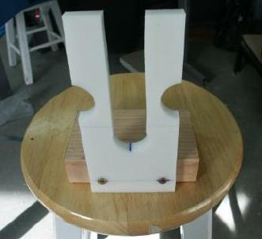
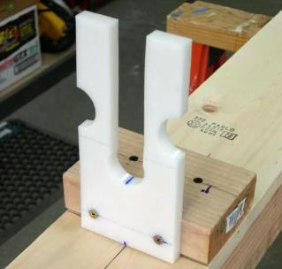
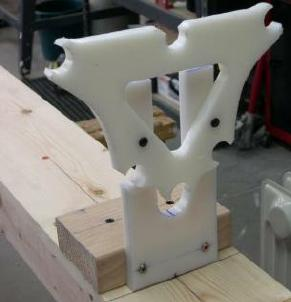

| Strongback - Stations | Menu Last Page Next Page | |
|

Attach the stations to a 5.5" wide 2X4 with 2.5" deck screws. |

Attaching Station Base - Attach the station/base to the strongback with 2.5" deck screws. |

Cross sections 1 and 8 are attached to stations 1 and 2 using 1.5" deck screws. |